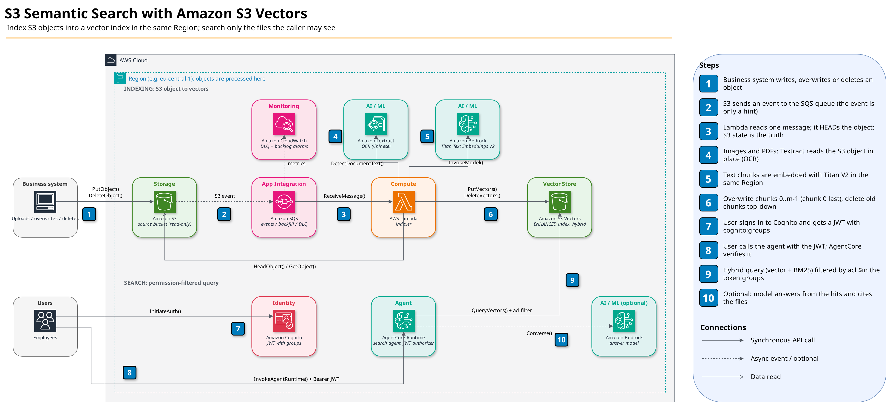

S3 Vectors: Making files in S3 Found by meaning
S3 holds lots of documents and images, but today you can only find them by file name. This post explains what Amazon S3 Vectors is, how to use it, and how it's priced, then ties it all together with a complete scenario demo: S3 files → vectors → permission-filtered retrieval → answers with sources.
Limits and prices are as stated in the official AWS documentation (checked 2026-11-24; prices from the AWS Price List, published 2026-11-21).
- S3 Vectors is a bucket type in S3 built specifically for storing vectors.No cluster to build; pay for storage and queries,Good for "lots of data, infrequent queries".
- Always use an ENHANCED index.It Filter by permissions first, then find the most similar, so results are still recalled even when a user can see only a small fraction of the files; it also supports Chinese full-text search and hybrid search.
- Most of the cost is "query processing": the larger the index, the more each query costs.Source text chunks go into "non-filterable" metadata, so if data can be split by department, use multiple indexes.
Notes:Key points Key points at the start of each section · Highlight Core conclusion · Docs · Limits source (a page in the official AWS documentation); click through to the references at the end to read the original.
1 · What it is
- Three layers:Vector bucket → vector index → vector(key + floats + metadata).Docs · What is
- Cold queries are sub-second; warm queries can be as fast as about 100 ms;Strongly consistent writes, so data is queryable right after it's written.Docs · What is
A "vector" is just a list of numbers that a piece of text or an image gets turned into.Content with similar meaning has similar numbers. So a search for "what day is payday" finds the passage "Salaries are paid on the 10th of the following month," even though the two sentences share no words.
- No servers to manage: no clusters, no node counts, pay for what you use.Docs · What is
- What it's good for: the official wording is "ideal for workloads where queries are less frequent". For example: enterprise document search, agent memory, image deduplication, video clip search.Docs · Use cases
- What it's not suited for: online recommendations that need very high QPS and very low latency. For these, you can export an index snapshot to OpenSearch Serverless.Docs · Integrations
- Permissions: the IAM namespace is
s3vectors:, ands3:separately, so permissions can be scoped to a single index.
2 · How to use it: five APIs are all you need
- When creating the index Dimension, distance metric, non-filterable fields cannot be changed later.Docs · Full-text config
- Writing the same key again overwrites it;Each PUT is billed at a minimum of 128 KB, so write in batches (up to 500 per call).Pricing page
- Create bucket:
CreateVectorBucket. - Create index:
CreateIndex, set the dimension (matching the embedding model, e.g. 1024 for Titan Text V2), the distance metric (cosine), and which metadata is only returned, not filtered on. - Write:
PutVectors, up to 500 per call. - Query:
QueryVectors, passing the query vector,topK, filter conditions; can return metadata and distance. - Management:
GetVectors(up to 100 keys per call),ListVectors(can be split into 16 parallel segments),DeleteVectors.
# boto3 1.44+ (older versions lack queryTexts / returnScores) sv = boto3.client('s3vectors', region_name='eu-central-1') sv.create_vector_bucket(vectorBucketName='my-vectors') sv.create_index(vectorBucketName='my-vectors', indexName='docs', dataType='float32', dimension=1024, distanceMetric='cosine', metadataConfiguration={ 'nonFilterableMetadataKeys': ['chunk_text'], # Source text: returned only, not filtered 'textSearchConfigurations': [{'metadataKey': 'chunk_text', 'language': 'zh'}]}) sv.put_vectors(vectorBucketName='my-vectors', indexName='docs', vectors=[{ 'key': 'doc1#00000', 'data': {'float32': emb}, 'metadata': {'dept': 'HR', 'acl': ['all-staff'], 'chunk_text': '12 days of annual leave...'}}]) hits = sv.query_vectors(vectorBucketName='my-vectors', indexName='docs', topK=5, queryVector={'float32': q_emb}, filter={'acl': {'$in': ['all-staff']}}, # Filter by permissions returnMetadata=True, returnDistance=True)['vectors']
Every step has a script you can run directly:examples/(01 Create an index · 02 Write and query · 03 Filtering · 04 Hybrid search · 05 Management · 06 Agent memory).
Filter syntax
| Syntax | Meaning |
|---|---|
{"dept": "HR"} | Equals (omitting the operator means $eq) |
{"price": {"$gte": 10, "$lte": 50}} | Numeric range:$gt $gte $lt $lte |
{"acl": {"$in": ["hr", "all-staff"]}} | is one of them; when acl is a list field,Matches if it overlaps with the given values(measured) |
{"path": {"$startsWith": "hr/"}} | Prefix matching (only available on ENHANCED) |
{"$and": [...]} / {"$or": [...]} | combinations; there are also $ne $nin $exists |
Watch the number of filter conditions:$in with 3 values counts as 3 conditions, ENHANCED indexes: up to 100 per query.Docs · Metadata filtering When a user belongs to many permission groups, merge them on the application side first.
3 · ENHANCED: filter first, then search
- ENHANCED First compute the vectors that match the filter, then search for the most similar only among them(pre-filtering).Docs · Metadata filtering
- Vector buckets created on or after 2026-09-30 default to ENHANCED; existing buckets default to CLASSIC and can be upgraded in place at no extra charge.Docs · Index mode
$startsWithWhen retrieving by permission, filters are often very narrow, so This matters more than anything else. To view an index's schema, use GetIndex See indexMode; to upgrade, use UpdateIndexMode, taking effect in place with no re-import.Docs · Index mode
4 · Hybrid search: match both meaning and keywords
- Vector search understands meaning, but Not sensitive to terms that must match exactly, such as error codes, model numbers, and people's names; BM25 full-text search fills exactly that gap.Docs · Hybrid search
- Hybrid search = vector + BM25,Merge into one ranking with RRF; there is
zhChinese tokenizer.Docs · Full-text config
queryVectorqueryTextshits = sv.query_vectors(vectorBucketName='my-vectors', indexName='docs', topK=5, queryVector={'float32': embed('VPN error E2071')}, queryTexts=[{'text': 'VPN error E2071', 'metadataKey': 'chunk_text'}], filter={'acl': {'$in': groups}}, returnMetadata=True, returnScores=True)
- How to enable it: the index must be ENHANCED; in
textSearchConfigurationslists the text fields, with 10 supported languages: en, fr, es, pt, it, de, nl, zh, ja, ko. - Can be enabled on existing data too:
UpdateMetadataConfigurationwill be backfilled in the background, with the field status changing fromBUILDINGbecomesACTIVEbefore it can be queried.Backfill is billed at PUT pricing.Pricing page - The tokenizer can't be changed later: to change it, you have to delete the field and add it again.
5 · Limits
- Per index Up to 2 billion vectors, with 1~4,096 dimensions.Docs · Limits
- Filterable metadata on CLASSIC indexes is limited to 2 KB, while ENHANCED allows 40 KB.Docs · Limits
| Project | Limit |
|---|---|
| Vector buckets / per Region per account | 10,000 |
| Indexes / per vector bucket | 10,000 |
| Vectors / per index | 2 billion |
| Dimension | 1 ~ 4,096 |
| Metadata / per vector | ENHANCED 100 KB (40 KB filterable) · CLASSIC 40 KB (2 KB filterable) · up to 50 keys |
| Non-filterable keys / full-text fields | 10 per index |
| Write | 500 per call; per index, 1,000 requests, 2,500 vectors, and 140 MB per second |
| Read | GetVectors: 100 per call; ListVectors: 1,000 per page, up to 16 parallel segments |
| Query | topK up to 10,000, 100 per page; ENHANCED allows up to 100 filter conditions per query; query text up to 1,024 characters |
6 · Pricing
- Five items:Storage, writes, query requests, query data processed, data returned; there are no fixed fees.Pricing page
- Query data processed = Number of vectors in the queried index × "processing size" per vector, in three tiers by index size.Pricing page
- Metadata that is neither filterable nor full-text searched Not counted toward query data processed.Pricing page
| Project | US East (N. Virginia) | Frankfurt | How it's calculated |
|---|---|---|---|
| Storage | $0.06 / GB·month | $0.064 / GB·month | Vector + key + all metadata |
| Writes (PUT) | $0.20 / GB | $0.214 / GB | Each request is billed at a minimum of 128 KB |
| Query requests | $2.50 / million requests | $2.70 / million requests | Each QueryVectors call |
| Query data processed | Per index: first 100K vectors $0.004/TB · 100K–10M $0.002/TB · over 10M $0.0004/TB Frankfurt: $0.004285 / $0.002143 / $0.000429 per TB | Vectors in the index × processing size | |
| Full-text search text | $0.00012 / TB (flat rate) | Full-text field size × number of vectors | |
| Returned data | $0.01 / GB; first 512 KB per query free | Each result is billed at a minimum of 256 bytes | |
How big is one vector
Check against AWS's own example
- Example 1: 10 million vectors across 40 indexes (250,000 each), 1 million queries per month → $11.38 / month.Pricing page · Example 1
- Example 3: 10 million vectors in 1 index, each with 3 KB of full-text search text, 1 million hybrid searches per month → $107.79 / month + a one-time backfill of $5.72.Pricing page · Example 3
Same 10 million vectors, a 10x difference: the difference is mainly in Size of the index each query scans. If your workload already queries by department or tenant,Split into multiple smaller indexes is much cheaper. The repo's tools/cost_estimate.py It uses the same algorithm as the pricing page; the tests check against these two examples.
7 · Do the math
Change the numbers below to calculate the monthly cost using the pricing page's method (S3 Vectors only). The defaults represent a document retrieval scenario: 20 million chunks, 600 characters each, with 1.8 KB of source text used for Chinese full-text search.
Assumptions: key is 174 bytes; each query uses topK = 10 and returns metadata, all within the 512 KB free tier. Prices from the AWS Price List (2026-11-21).
8 · Scenario: semantic search over S3 files (permission-filtered)
- Events are just "reminders"; the current state of S3 is the "truth": duplicate or out-of-order events don't leave incorrect vectors; the rare lost event is caught by reconciliation.
- Permission groups Taken only from a verified JWT, and any groups in the request body are ignored; an object without an acl can't be found by anyone.
- Process one object Doesn't scan the entire index: chunk keys are numbered sequentially and fetched directly by key.
Requirements: an S3 bucket holds hundreds of TB of documents, images, and videos; content must be searchable in natural language, results may only include files the caller is allowed to see, and object processing must stay in-Region. For the full requirements and a point-by-point comparison, see the repo's requirements.md and architecture.md.

What each step does
- Write: A business system uploads, overwrites, or deletes an S3 object. Expiration deletes work the same way.
- Notification: S3 sends events to an SQS queue.The event is just a "reminder", possibly duplicated or out of order.
- Receive message: Lambda takes 1 message at a time, first does a HEAD on the object,Treat the current S3 state as the source of truth.
- Text recognition: Images and PDFs go to Textract, which reads the objects directly from S3 without downloading them.
- Convert to vectors: Text is split into 600-character chunks, and vectors are generated with Titan V2 in the same Region.
- Write to the vector store: Overwrite chunks 0..m-1, then delete the leftover old chunks.
- Sign in: The user signs in with Cognito and gets a JWT listing the groups they belong to.
- Ask a question: Calls the agent with the JWT.AgentCore verifies the token first, and anything that doesn't match is rejected.
- Retrieval: Hybrid vector + keyword search,Search only files that the groups in the token can access.
- Answer (optional): The LLM answers from the retrieved chunks and cites sources; if nothing is found, it says so.
Sync mechanism: how Lambda decides in steps 3~6
Why a failure leaves no dirty data
A file is split into many chunks, and the vector key is FileID#00000, #00001…both writes and deletes follow one rule:A file's chunks always form a contiguous range starting from 0.
- Fails partway through writing: Chunk 0 is still old, so the next check detects the mismatch and rewrites it.
- Fails partway through deleting: The remaining chunks are still one contiguous range, so the next run scans up from 0, finds all of them, and then deletes them.
- No need to scan the whole index: Fetched directly by key, so the cost of processing a file doesn't depend on index size.
s3:ListBucket?Without this permission, a HEAD on a deleted object returns 403, not 404. The indexer then can't tell "deleted" from "no permission", and delete events keep failing. ListBucket is only a read permission, so it doesn't break the "read-only source bucket" requirement.What the end-to-end tests check
| # | Check |
|---|---|
| 1 | Upload a file → automatically indexed |
| 2 | Regular employees can't find salary files; the compensation team can |
| 3 | A regular employee forges it in the request body "groups": ["hr-payroll"] → Still not found |
| 4 | No token → rejected by the runtime |
| 5 | Search for error code "E2071" → hybrid search ranks the VPN doc first |
| 6 | Overwrite a file → answers use the new content, and the old chunks are deleted |
| 7 | Delete a file → its vectors are deleted |
| 8 | Reconciliation: no orphaned vectors, stale vectors, or missing objects |
eu., us., global. prefix), the retrieved Source text chunks are sent to other Regions for processing. By default, the demo doesn't call an LLM and only returns search results; whether to enable it is up to the compliance team.9 · More scenarios
| Scenario | How to use S3 Vectors | Sample |
|---|---|---|
| IT tickets / error codes | Hybrid search: BM25 matches "E2071" exactly, vectors understand "account locked" | examples/04_hybrid.py |
| Long-term memory for agents | Each memory carries user_id + timestamp; filter by user and time window, then find the nearest matches | examples/06_agent_memory.py |
| Product search | Embed the description; store price, inventory, and category as filterable metadata | examples/02, 03 |
| Managed RAG | Bedrock Knowledge Bases can use S3 Vectors directly as the vector store, with parsing, chunking, and embedding all managed | — |
Build your own pipeline, or use Knowledge Bases?If you want to go live fastest, use Knowledge Bases. If you need to control the extraction rules and permission fields yourself, or use the same embedding rules as other data sources (as this article requires), build it yourself.Docs · Integrations
10 · Common pitfalls
- CLASSIC index + a very narrow filter → Too few results, or even none. Switch to ENHANCED.
- Putting large text in filterable metadata → Writes fail with 400 when over the limit, and you pay for it on every query. Put the source text chunks in
nonFilterableMetadataKeys. - Frequently overwriting or deleting the same set of keys → Old data temporarily counts toward the index size,Query costs temporarily go up.Pricing page
- Writing one vector at a time → Each PUT is billed at a minimum of 128 KB. Write in batches, up to 500 per call.
- The boto3 bundled with Lambda is too old → No
queryTexts,returnScores. Include a recent boto3 in the deployment package. - Running ListVectors for every object processed → Breaks down once the index gets large. Use fixed-format keys (
doc_id#sequence number), fetched directly by key. - Partially written, partially deleted → Leaves behind old chunks that never get deleted, and even old permissions. Rule:Chunk 0 is written last; deletes go from the highest index down, so what remains is always a contiguous range that a retry can finish.
- Failed messages wait 90 minutes before being retried → Set the SQS visibility timeout to about 6 times the Lambda timeout. On failure, use
ChangeMessageVisibilityReduces wait time. - Permission groups are filled in by the caller → Anyone can impersonate another group. Permission groups must come only from verified identities.
? · Glossary
| Term | In plain words |
|---|---|
| Vector / embedding | Turns a passage of text or an image into a list of numbers; similar meanings give similar numbers |
| Distance (cosine) | How "different" two vectors are: 0 means identical, larger means less similar |
| topK | Returns the top K closest matches |
| Metadata | Labels attached to vectors: department, permission groups, path, source text snippet… |
| Filterable / non-filterable | Whether you can filter on it in queries; non-filterable fields are only returned with results and don't count toward query processing |
| BM25 | A classic keyword scoring method: the more often a query term appears and the rarer it is, the higher the score |
| RRF | Merges two rankings into one: each result gets points based on its position in both rankings |
| ENHANCED / CLASSIC | Index modes: filter first, then search / filter while searching |
| ETag | S3's "fingerprint" for each object version; when the content changes, the ETag changes |
| DLQ | Dead-letter queue: messages that fail too many times go here for someone to handle |
| JWT | The "pass" you get after logging in: it says who you are and which groups you belong to, and it's signed, so it can't be altered |
Reference
- github.com/tsaol/s3-vectors-search · Companion code for this article: basic API examples, scenario demos, a cost calculator (MIT-0)
- What is / Use cases / Integrations · Working with S3 Vectors
- Limits · Limitations and restrictions
- Metadata filtering
- Index mode · Changing a vector index's mode
- Hybrid search with Amazon S3 Vectors
- Full-text config · Configuring full-text search
- Pricing page · Amazon S3 pricing (Vectors section and Examples 1 and 3)
- AgentCore Runtime: forward the Authorization header (JWT authorizer)